Sechs Monate in Berlin
This is photo journal of my time in Berlin. These photos were taken on Ilford Delta 400 35mm film on a Olympus Stylus Epic. All shot between September 2016 and February 2017.
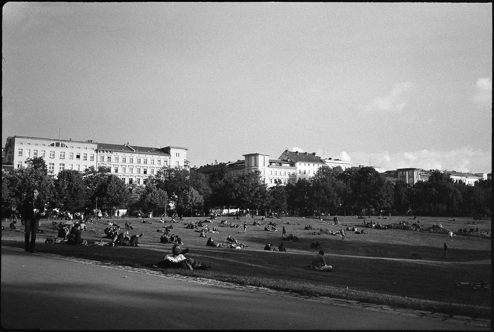
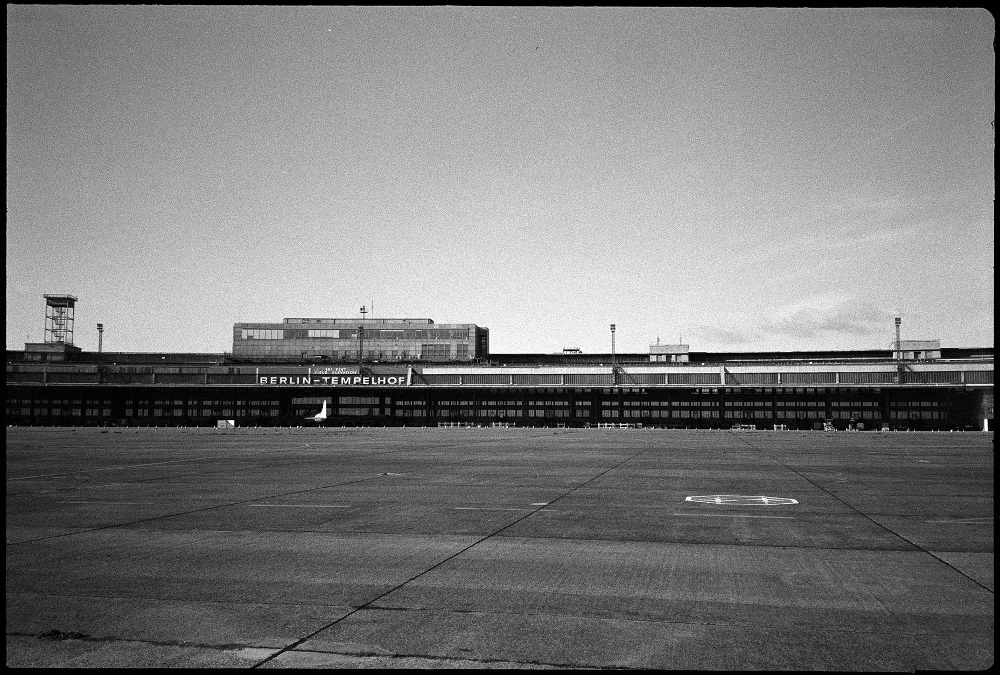
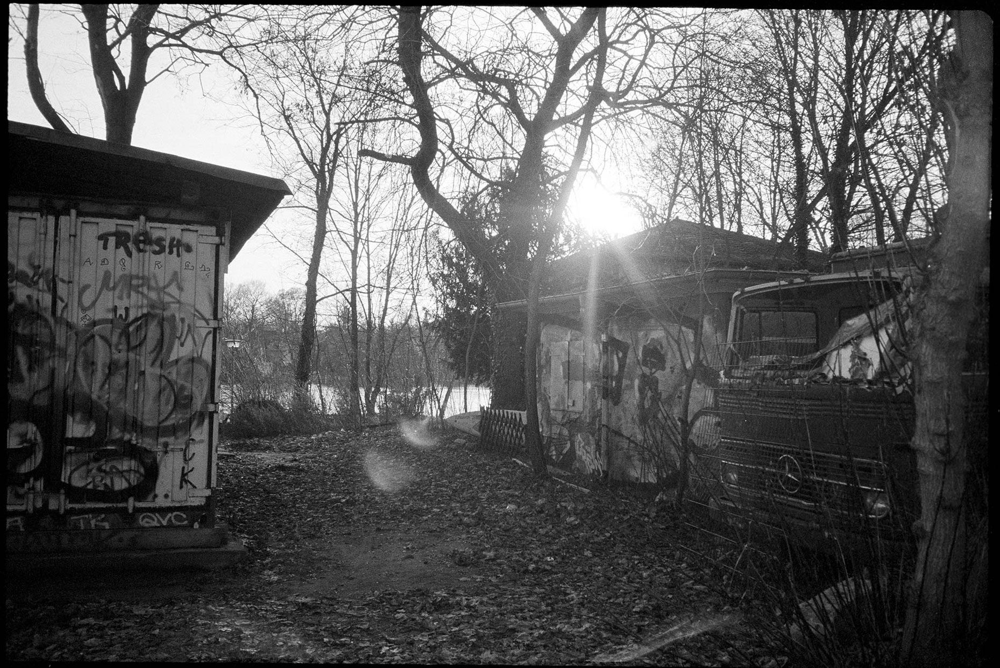
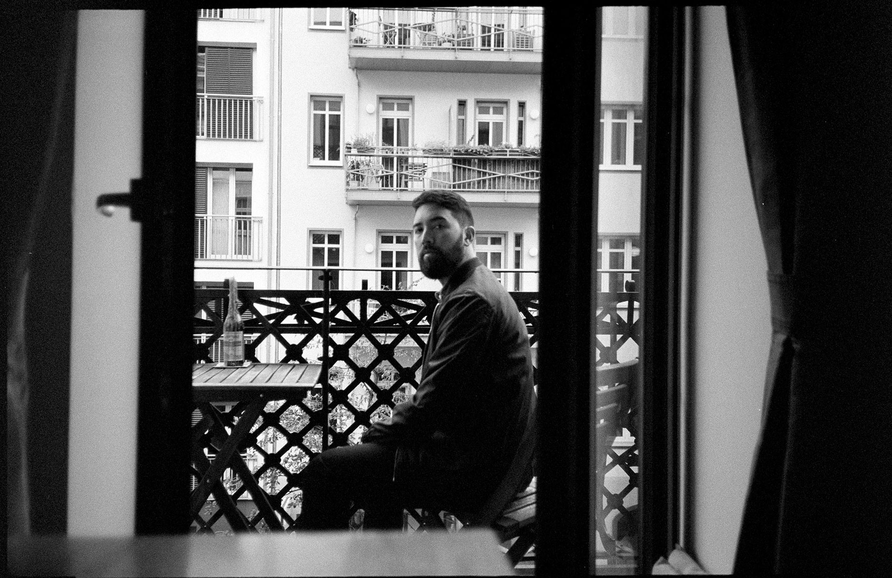

 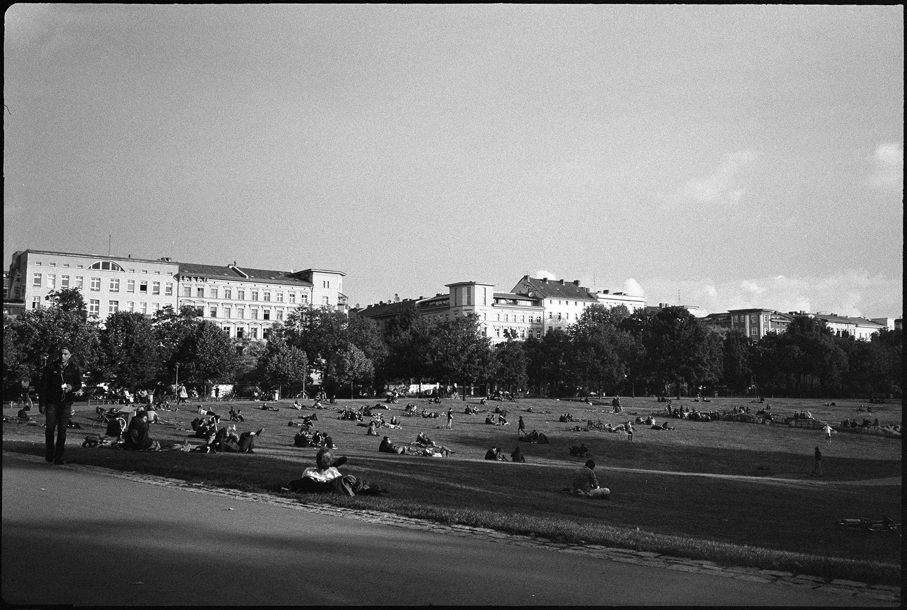
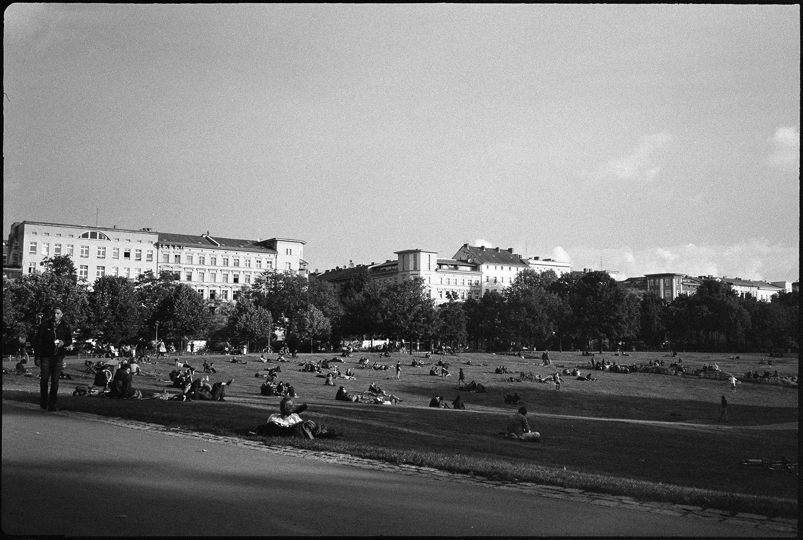


 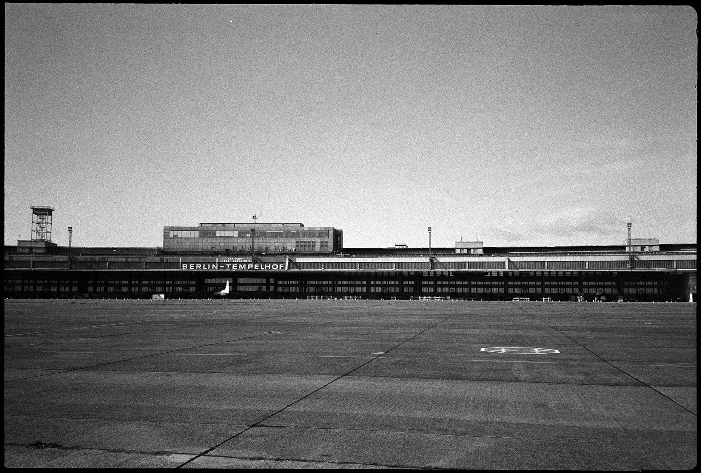
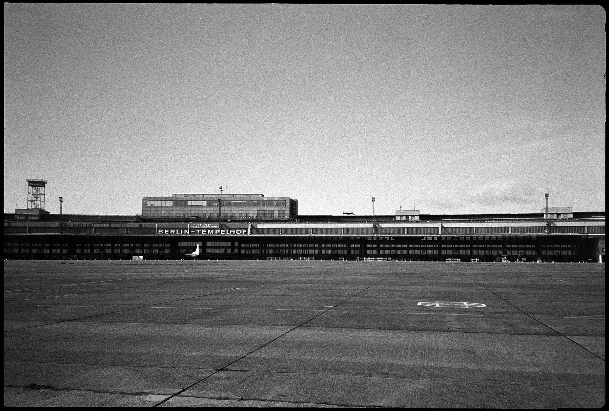


 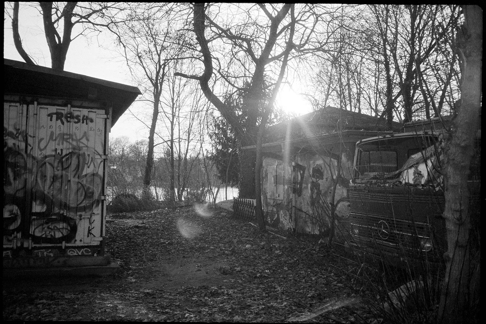
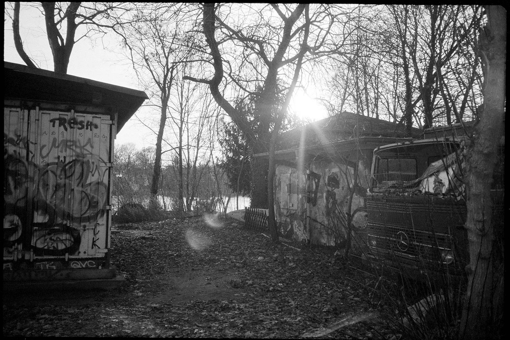


 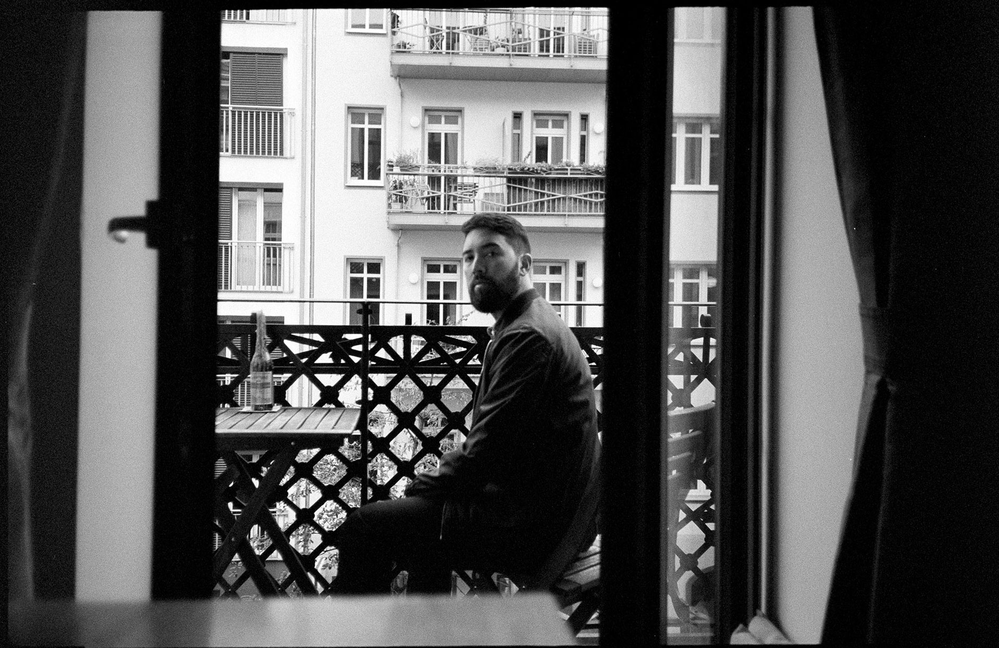
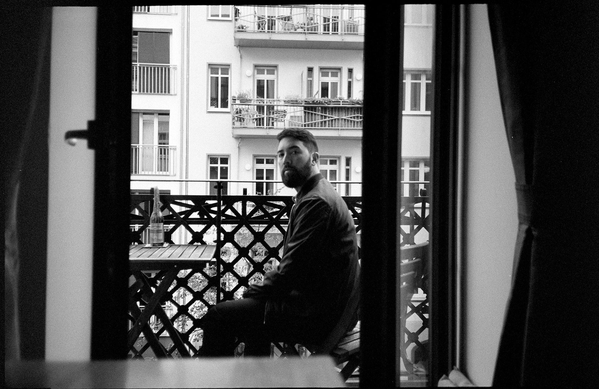